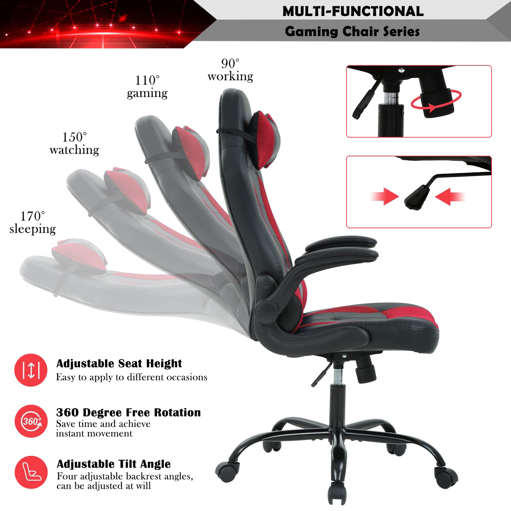
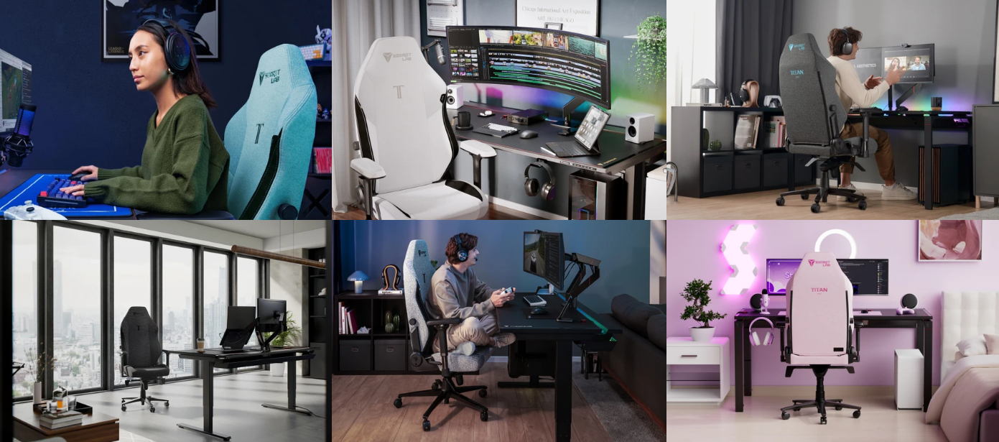

History
During the year 2006, the world's first gaming chair was first produced. In the United states of Michigan, a small company stepped up and went on to create racecar chairs. The company had lots of chairs but no-one to sell them to only because the car industry was decimated during the time of 9/11 terrorist attacks happened. DXRacer (The racing seat company) had been the foundation and it focused on the growing popularity of video games. Since Esports had been creeping up in popularity. So that meant ordinary chairs were not great for long periods of sitting. DXRacer had introduced the world's first gaming chair in 2006. Thus came the era of racing-style gaming chairs. The design was heavily used as a template for future projects as other companies would make the concept a common product. The neutral posture technique was transferred into an ergonomic office chair twenty-one years later. Early Esports players required the same ergonomic support as office workers, but no formality. The world's first racing-style gaming chair was produced.
Ergonomics
Most gamers nowadays desire certain properties when searching for a reliable and dependable gamin chair, And that would be how ergonomic the chair is. The key features people would look for in an ergonomic chair would include a height-adjustable seat, adjustable seat depth, lumbar support, armrests, and tension controls. Your experience sitting in an ergonomic gaming chair should result in better posture, less strain, and prevention of musculoskeletal issues, especially in long sessions.

Style and Aesthetics
It is understandable consumers want to have a chair that matches the style and aethetics of their workstation. So companies will make different color variations to suit peoples needs in the aethetics department. A great example is shown down in the image below, you can see how well the chairs matches with everything else in the room.
Durability
Usually gaming chairs would last around 10 - 15 years before they need to be replaced entirely. Investing for a gaming chair can be beneficial and reliable since it would be a once off payment for more than a decade.
Height Adjustable
Every gaming chair is height adjustable, this is to...
• Improve neck and back posture
• Providing comfort
• Reach of access (keyboard and mouse)